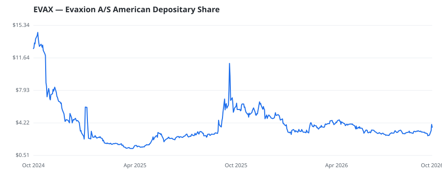

bullish · bearish · n/a — dots: price>SMA10 · SMA10>SMA50 · SMA50>SMA200 · up>down volume (20d)
Other · micro cap

Evaxion AS is a clinical-stage TechBio company developing novel vaccines with its proprietary, clinically validated and scalable AI platform, AI-Immunology. The platform harnesses the power of artificial intelligence to decode the human immune system and develop novel vaccine candidates for cancer and infectious diseases for patients in the market. Evaxion has developed a clinical-stage oncology pipeline of novel personalised vaccines and a preclinical infectious disease pipeline in bacterial and viral diseases with high unmet medical needs. The group is committed to transforming patients' liv · website
| Revenue | — | Net income | $-7.7M |
|---|---|---|---|
| Operating income | $-9.2M | Diluted EPS | $-0.81 |
| Assets | $28.4M | Equity | $17.0M |
🛒 Newly buying: Merck & Co., Inc. (+322%, 0.7% of book)
| Fund | Fund alpha vs SPY | Position | % of book |
|---|---|---|---|
| Merck & Co., Inc. | +322% | $4M | 0.7% |
Hedge data: SEC EDGAR 13F · ranked funds beat SPY in >50% of their quarters · fund alpha = mirror-portfolio return minus SPY.